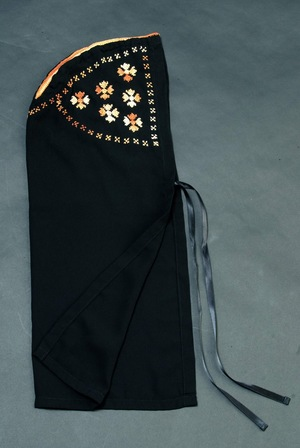

ⲕⲟⲩⲕⲗⲉ S, ⲕⲟⲩⲕⲗⲓ Sf, ⲕⲟⲩⲕⲗⲁ F, ⲕⲟⲩⲗⲗⲁ (? ⲕⲟⲩⲕⲟⲩⲗⲗⲁ) B nn f, hood, cowl of monks, whence ? κουκούλλιον (in CO 395 S ⲕⲟⲩⲕⲗⲓⲛ, K 120 B ⲕⲟⲩⲕⲗⲓⲟⲛ غفارة, opp ⲕⲗⲁϥⲧ): RE 9 164 S tailoress sends 2 ⲕ. to bishop, BAp 125 S levitum, schema, ⲕ. & girdle as grave-clothes = MIE 2 418 B ⲕⲟⲩⲗⲗⲁ = P arab 4785 210 قلسوة, P 44 91 S Ar do., Mor 31 15 Sf ⲕⲟⲩⲕⲗⲓ, BM 699, AZ 23 41 F, C 86 177 B ⲕⲟⲕⲉⲗ.Cf كاكولة Almk 1 320.
(noun feminine)
clothes
hood, cowl of monks, whence ? κουκουλλιον

1: hood, cowl, 2: hood, cowl (of monks)
complete
101b
See also:
| view | ⲕⲗⲁϥⲧ SB ⲕⲗⲉϥⲧ, ⲕⲗⲃⲧ S ⲭⲗⲁϥⲧ B | (noun feminine) hood, cowl mostly of monks [τιαρα]803 |